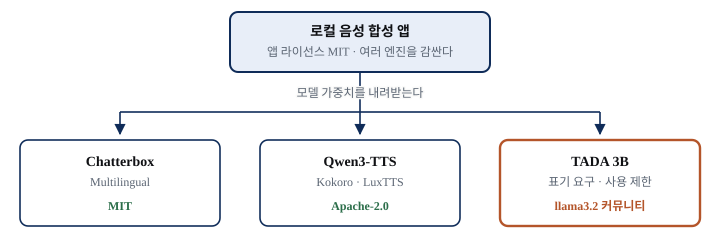
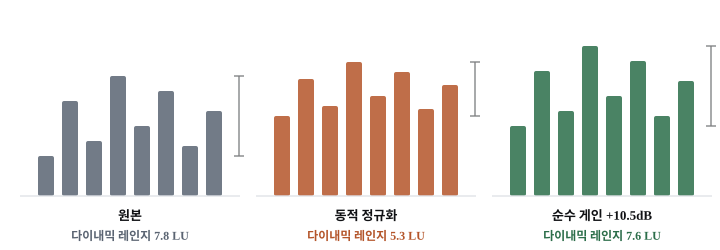
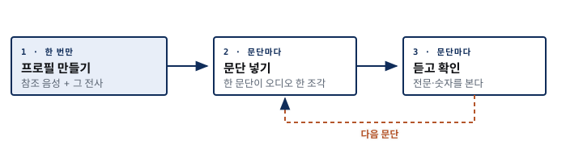
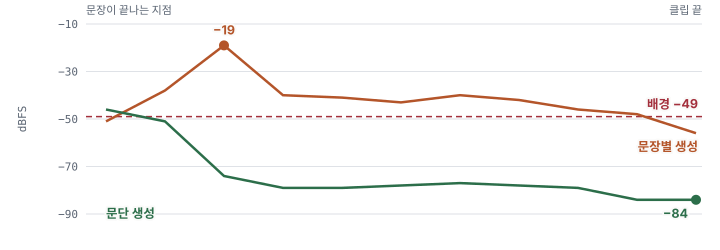
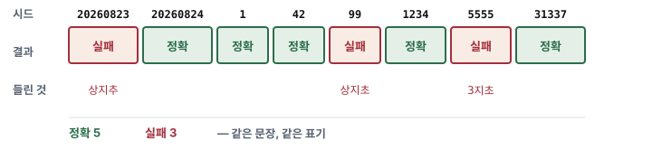
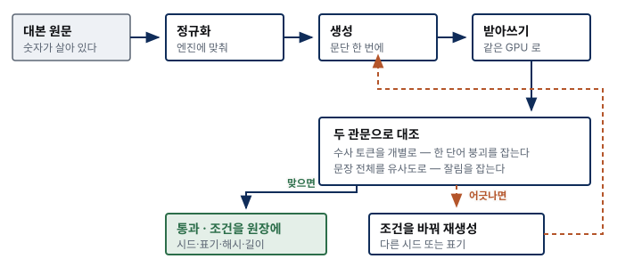

한도와 권리
유료 서비스에서 실제로 걸리는 것
AI 콘텐츠 파이프라인
참조 음성 30초에서 강의 영상까지
이 영상의 목소리도 참조 음성 28.73초에서 복제했습니다
만드는 것은 무료로 된다
어려운 쪽은 만든 것이 맞는지 확인하는 것
유료 서비스에서 실제로 걸리는 것
복제의 씨앗을 녹음한다
대본을 오디오로 바꾼다
무엇이 깨지고 어떻게 잡나
이 영상은 흐름과 판단 기준을, 리포트는 근거와 측정값을 맡는다
이 영상
상세 리포트
첫째
구독형 음성 합성에서 실제로 막히는 세 가지
요금 안에 분량이 함께 팔린다. 넘기면 추가 결제다
남은 분량이 다음 달로 넘어가지 않는 경우가 많다
내 목소리로 만드는 기능 자체가 무료 플랜에 없다
분량 한도가 품질을 깎는 경로
이 차시와 비슷한 길이
화면 설명을 뺀 실제 발화
고쳐서 다시 뽑기를 반복하면
요금과 한도는 자주 바뀌므로 숫자를 고정하지 않습니다. 확인일 2026-08-22
무엇이 사라지고 무엇이 넘어오는지 나란히 본다
구독형
로컬
로컬 도구는 대체로 여러 엔진을 감싸는 껍데기다

앱 라이선스가 엠아이티인 도구의 엔진 8종을 하나씩 열어봤다
| 엔진 | 모델 라이선스 | 모델카드 언어 | 한국어 |
|---|---|---|---|
| Chatterbox Multilingual | MIT | 23개 | O |
| Qwen TTS | Apache-2.0 | 태그 없음 | ? |
| TADA 3B | llama3.2 | 10개 | X |
| Kokoro 82M | Apache-2.0 | en | X |
HuggingFace 모델카드 기준, 확인일 2026-08-22. 8종 중 4종만 실었습니다
라마 커뮤니티 라이선스는 표기 요구와 사용 제한이 붙는다
영어 전용 셋, 다국어인데 한국어 없음 하나, 태그 없음 둘
앱이 클라우드 API 를 함께 감싸는 경우가 있다
1분이 걸린다. 건너뛰면 공개 배포 단계에서 되돌려야 한다
이 목적에 맞다
다른 것을 찾는다
둘째
참조의 말투가 그대로 복제된다
낭독조로 읽으면 결과도 낭독조가 된다
즉흥으로 바꾸면 전사와 어긋난다
숫자를 보고 멈추는 습관까지 학습된다
대본 길이를 낭독 속도로 역산해야 한다
36.97초를 올렸더니 거절됐다
사람이 실제로 읽은 속도의 실측값
넉넉해 보여도 문장을 더 붙이지 않는다
길이 상한은 도구에서 실측했고 나머지는 복제 품질에 직접 영향한다
| 항목 | 기준 | 왜 |
|---|---|---|
| 길이 | 25-29초 | 30초 상한. 20초보다 짧으면 너무 빨리 읽은 것 |
| 형식 | mono 24kHz 16bit | 폰 녹음도 변환하면 된다 |
| 마이크 거리 | 15-20cm | 너무 가까우면 파열음이 터진다 |
| 배경 | 팬과 키보드 소리 없이 | 배경음악은 절대 금지 |
| 발화 | 웃음과 헛기침 없이 | 참조의 결함까지 복제된다 |
실제 녹음의 측정값. 조용하지만 살릴 수 있는 경우다
| 항목 | 측정 | 판정 |
|---|---|---|
| 통합 라우드니스 | -31.0 LUFS | 조용하다. 보통 목표는 -20 안팎 |
| 트루 피크 | -12.3 dBTP | 클리핑 없음. 헤드룸 충분 |
| 노이즈 플로어 | -59.3 dB | 깨끗하다 |
| 신호 대 잡음 | 약 25 dB | 충분 |
직접 측정, 확인일 2026-08-22
다시 녹음할지 판단하는 기준은 하나다
목표 라우드니스까지의 차이
들리지 않는다. 그래서 살린다
배경이 -35dB 이던 녹음은 확실히 들린다
동적 정규화는 음량을 맞추면서 표현 폭을 압축했다
| 처리 | 라우드니스 | 다이내믹 레인지 |
|---|---|---|
| 원본 | -31.0 LUFS | 7.8 LU |
| 동적 정규화 | -23.2 LUFS | 5.3 LU (2.5 압축됨) |
| 순수 게인 +10.5dB | -23.5 LUFS | 7.6 LU (보존) |
참조의 표현 폭이 복제의 표현 폭이 된다

이 한 파일이 이후 모든 오디오의 씨앗이다
28.73초. -23.5 LUFS, 트루 피크 -1.8 dBTP
36.97초를 30초에 맞추며 문장 사이에서 끊었다
그 파편이 복제에 그대로 들어간다
셋째
반복되는 것은 뒤의 두 걸음뿐이다

음성과 텍스트가 어긋나면 복제 품질이 떨어진다
많은 도구가 둘을 함께 받는다
준비되셨으면이 준비되셨다면으로 읽혔고 후자로 적었다
이 차시에서 가장 실용적인 규칙이고, 직접 재서 얻었다
문장별로 쪼개지 않는다
문장마다 끝에 잡소리가 남는다
같은 세 문장, 마지막 500밀리초를 20밀리초 단위로 측정

배경보다 30데시벨 크다
문장이 끝난 직후에 다시 소리가 난다
배경보다 35데시벨 아래. 디지털 무음이다
모델이 끝 신호에 제대로 닿아야 꼬리가 깨끗해진다
나온 오디오를 처음부터 끝까지 듣는다
100자를 넣었으면 12초에서 14초가 나와야 한다
길이만 봐도 조기 종료를 대략 알 수 있다
삼십 초가 상지추로 발음된 적이 있다
문장 전체는 자연스럽게 들리고 그 단어만 무너진다
넷째
넷 다 오류 메시지가 없다. 로그만 봐서는 알 수 없다
같은 뜻을 숫자로 쓰면 무너지고 한글로 쓰면 맞았다
같은 문장 같은 표기인데 실행마다 다르다
문장별로 쪼개면 문장마다 꼬리가 남는다
문장이 짧아질수록 빨라진다
숫자 부분만 6가지로 바꿔 각각 두 번씩 생성하고 받아쓰기로 대조했다
| 표기 | 정확 / 시도 | 잘못 나온 소리 |
|---|---|---|
| 삼십 초 · 서른 초 등 한글 | 8 / 8 | 없음 |
| 30초 · 30 초 | 0 / 4 | 퇴지쳐 · 탄주초 · 퇴지초 · 3초 |
Chatterbox Multilingual, 확인일 2026-08-22
같은 검사를 두 번째 엔진으로. 정규화가 필요 없다
| 입력 | 받아쓰기 결과 | 판정 |
|---|---|---|
| 30초 | 30초 | O |
| 삼십초 | 30초 | O |
| 1,024개 항목 | 1024개 | O |
| 8.6초에 처리 | 8.6초 | O |
VoxCPM2, 확인일 2026-08-22
한 엔진에서 필요한 변환이 다른 엔진에서는 해로울 수 있다
숫자는 한글로 쓴다를 도구와 무관한 규칙으로 굳히면 틀린다
표기가 아니라 생성의 편차다. 시드만 바꿔 8번 돌렸다

이 지점에서 자동 검증이 선택이 아니라 요구사항이 된다
강의 한 편에 숫자가 나오는 자리 수
37퍼센트면 그만큼이 무너진다
두 번째 엔진도 비결정적으로 실패한다. 그리고 시드를 받지 않는다
| 입력 | 받아쓰기 결과 | 판정 |
|---|---|---|
| 37퍼센트 문장 1차 | 정확도가 37 | 잘림 |
| 37퍼센트 문장 2차 | 온전함 | O |
| 1,024개 | 114개 | 숫자 오류 |
| 가운뎃점이 있는 문장 | 감토 | 잡음으로 |
그래서 타임라인은 생성된 오디오의 실측 길이로만 짠다
| 문장 글자 | 오디오 길이 | 자 / 초 |
|---|---|---|
| 33자 | 4.60초 | 7.2 |
| 26자 | 2.92초 | 8.9 |
| 36자 | 3.52초 | 10.2 |
| 사람 참조 | 28.73초 | 6.1 |
다섯째
받아쓰기도 생성에 쓴 그래픽 카드로 한다. 외부 서비스가 필요 없다

하나만 두면 놓친다. 실측으로 확인했다
유사도 관문
숫자 관문
붕괴된 전사의 유사도가 정확히 0.80 으로 하한을 통과했다
| 실패 유형 | 유사도 관문 | 숫자 관문 |
|---|---|---|
| 숫자 한 단어 붕괴 | 통과시킴 | 잡음 |
| 뒤 문장 잘림 | 잡음 | 확인 대상 없음 |
정규화된 한글에서 되짚으면 오탐한다
무엇을 치환했는지는 우리가 알고 있다
이번 · 사실 · 구조 를 수사로 오인해 헛된 재시도가 걸린다
시드 · 표기 · 입력 해시 · 오디오 해시 · 길이
문장 끝 잡소리를 자동으로 가려내려는 시도였다
말을 820밀리초 잘라먹었고, 3.98초에서 잘라도 전사가 온전했다
마지막 낱말이 1초를 넘게 잡히고, 조각만 떼면 환각했다
충분한 공백 뒤에 나는 소리는 모델이 흘린 것이라고 봤다
정답지로 쓸 파일을 스스로 만든 관문이 불량으로 판정했다
| 대상 | 관문 판정 | 실제 |
|---|---|---|
| 합성 클립 1 | 깨끗 | 잡소리 (놓쳤다) |
| 합성 클립 2 | 잡소리 | 깨끗 (정상을 걸렀다) |
| 사람의 실제 녹음 | 잡소리 | 깨끗 |
사람 녹음 28.73초 안에 공백 뒤 재개가 28회. 초당 한 번입니다
이 순서가 도구보다 오래 남는다
관문이 틀린 것이다. 정답지를 먼저 통과시켜 본다
방법을 더 비틀기 전에 결함이 생기는 조건을 본다
생성 단위를 문단으로 바꾸니 문제 자체가 없어졌다
정리
25초에서 29초, 배경이 조용할 것
문장별로 쪼개지 않는다
관문 둘로 대조하고 어긋나면 다시 뽑는다